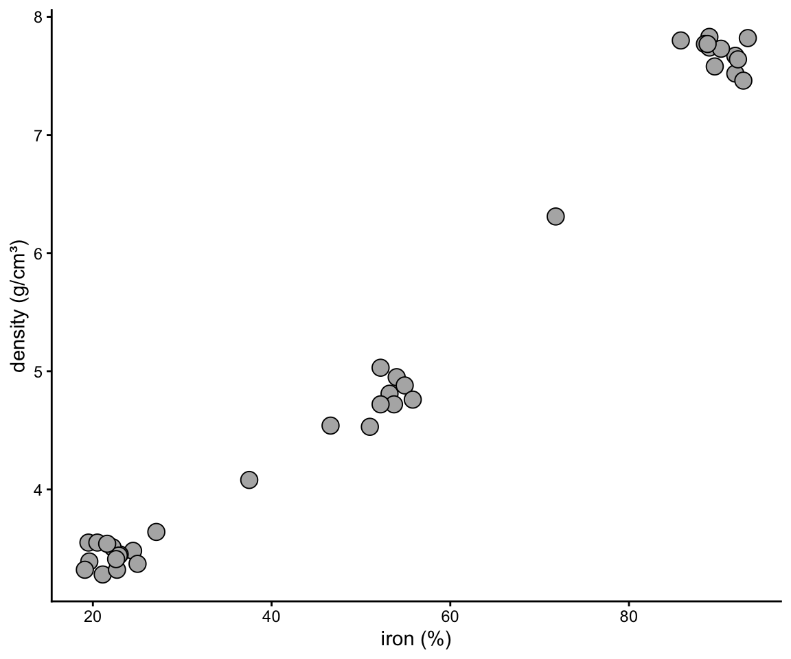
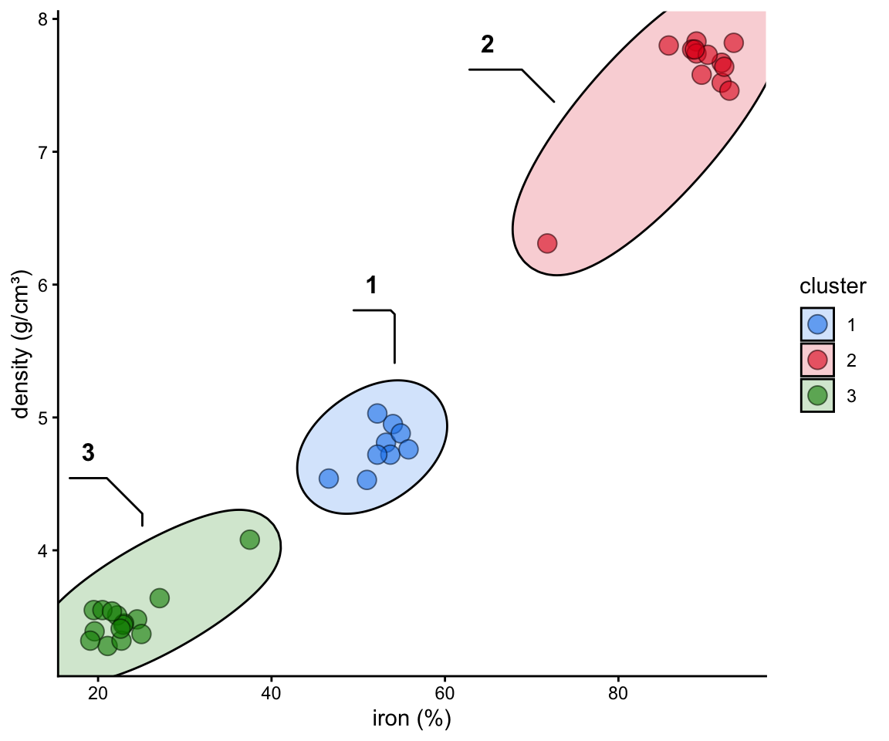
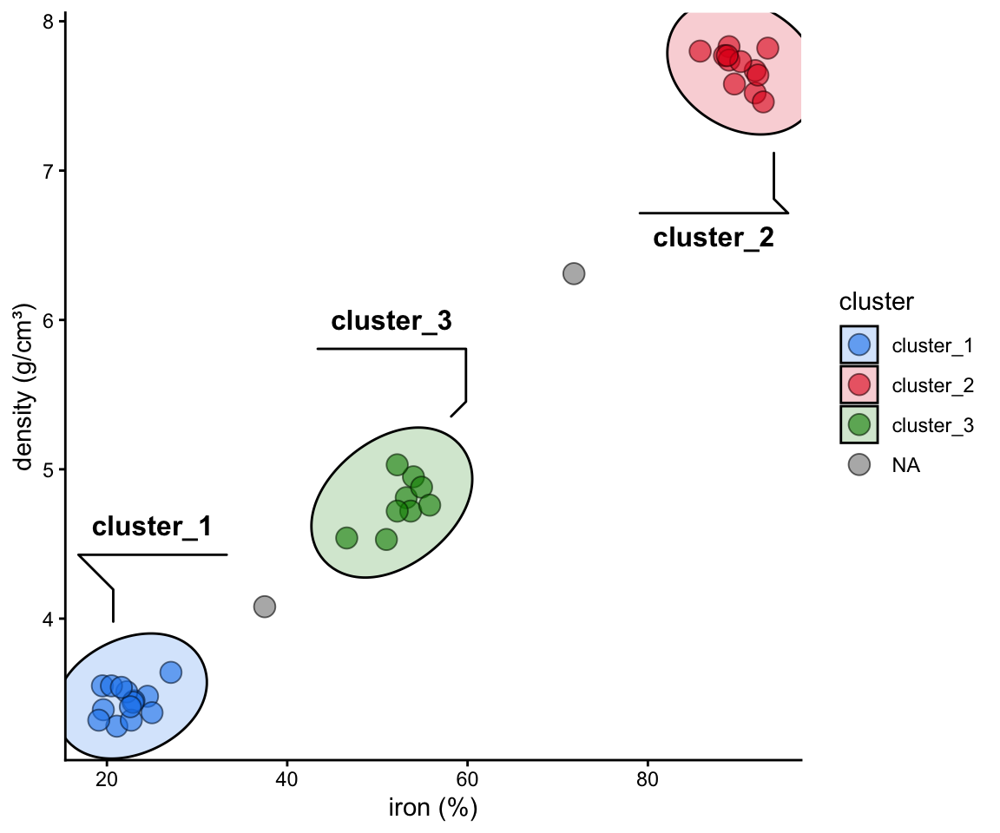

flat clustering
“Do my samples fall into definable clusters?”
kmeans
One of the questions we’ve been asking is “which of my samples are most closely related?”. We’ve been answering that question by building trees with hierarchical clustering. Here we take a different approach, one that sorts samples straight into a set number of groups without building a tree first. It is called k-means, and can help us decide how to assign our data into clusters. It is generally desirable to have a small number of clusters, however, this must be balanced by not having the variance within each cluster be too big. To strike this balance point, the elbow method is used. For it, we must first determine the maximum within-group variance at each possible number of clusters. An illustration of this is shown in A below:

One we know within-group variances, we find the “elbow” point - the point with minimum angle theta - thus picking the outcome with a good balance of cluster number and within-cluster variance (illustrated above in B and C.)
For the examples in this chapter we will use meteorite_fragments, which loads along with the rest of the course datasets. It describes 37 meteorite fragments recovered from four places where meteorite hunters search: the Atacama and Sahara deserts, the Nullarbor Plain in Australia, and the Antarctic ice fields. Each fragment was measured for its iron content (iron_percent), its density (density_g_per_cm3), and two more measurements we will come back to at the end of the chapter, nickel_percent and silica_percent. (These are simulated data, built with realistic values for each kind of meteorite.)
meteorite_fragments
## # A tibble: 37 × 6
## fragment find_site iron_percent density_g_per_cm3
## <chr> <chr> <dbl> <dbl>
## 1 MF-01 Antarctic ice fi… 24.5 3.48
## 2 MF-02 Atacama Desert 23 3.45
## 3 MF-03 Antarctic ice fi… 37.5 4.08
## 4 MF-04 Nullarbor Plain 22.2 3.51
## 5 MF-05 Sahara Desert 85.8 7.8
## 6 MF-06 Nullarbor Plain 19.6 3.39
## 7 MF-07 Nullarbor Plain 25 3.37
## 8 MF-08 Sahara Desert 89 7.83
## 9 MF-09 Sahara Desert 19.5 3.55
## 10 MF-10 Atacama Desert 91.9 7.67
## # ℹ 27 more rows
## # ℹ 2 more variables: nickel_percent <dbl>,
## # silica_percent <dbl>Before clustering anything, it is worth simply plotting two of the measurements against each other:
ggplot(meteorite_fragments, aes(x = iron_percent, y = density_g_per_cm3)) +
geom_point(shape = 21, size = 4, fill = "grey70") +
theme_classic() +
labs(x = "iron (%)", y = "density (g/cm³)")
Figure 2.28: Iron content and density of 37 meteorite fragments. A scatter plot with iron content on the horizontal axis and density on the vertical axis; the points fall into three separate clumps, at low, middle and high iron content and density, with two points lying between the clumps.
Your eye probably finds three groups right away, plus a couple of fragments that do not sit comfortably in any of them. K-means does formally what your eye just did. Let’s try it using runMatrixAnalysis. We set analysis = "kmeans", name the columns to cluster on, and give the number of clusters we want to the parameters argument as n_clusters — the same way we asked for a number of groups when cutting a tree in the hierarchical clustering chapter. Below we ask for three; the next section shows how to arrive at that number yourself. (If you leave parameters out altogether, desktop R will open a small application that lets you choose the number of clusters with a slider. That application cannot run in a browser, so in a markdown document, in a WebR cell, or in an escape room, always say what you want explicitly.)
meteorite_clusters <- runMatrixAnalysis(
data = meteorite_fragments,
analysis = c("kmeans"),
parameters = c(n_clusters = 3),
columns_w_values_for_single_analyte = c("iron_percent", "density_g_per_cm3"),
columns_w_sample_ID_info = c("fragment", "find_site")
)
meteorite_clusters
## # A tibble: 37 × 6
## sample_unique_ID fragment find_site cluster iron_percent
## <chr> <chr> <chr> <int> <dbl>
## 1 MF-01_Antarctic … MF-01 Antarcti… 3 24.5
## 2 MF-02_Atacama De… MF-02 Atacama … 3 23
## 3 MF-03_Antarctic … MF-03 Antarcti… 3 37.5
## 4 MF-04_Nullarbor … MF-04 Nullarbo… 3 22.2
## 5 MF-05_Sahara Des… MF-05 Sahara D… 2 85.8
## 6 MF-06_Nullarbor … MF-06 Nullarbo… 3 19.6
## 7 MF-07_Nullarbor … MF-07 Nullarbo… 3 25
## 8 MF-08_Sahara Des… MF-08 Sahara D… 2 89
## 9 MF-09_Sahara Des… MF-09 Sahara D… 3 19.5
## 10 MF-10_Atacama De… MF-10 Atacama … 2 91.9
## # ℹ 27 more rows
## # ℹ 1 more variable: density_g_per_cm3 <dbl>The output has one row per fragment: its ID columns, the cluster k-means assigned it to, and the two measurements it was clustered on. As in the networks chapter, runMatrixAnalysis scales each column before it clusters (scale_variance = TRUE is the default). That matters here: iron runs from about 20 to over 90 percent while density spans only about 3 to 8 g/cm³, so without scaling iron would decide the clusters almost on its own. We can plot the results and color them according to the group that k-means suggested. We can also highlight groups using geom_mark_ellipse. Note that it is recommended to specify both fill and label for geom_mark_ellipse:
meteorite_clusters$cluster <- factor(meteorite_clusters$cluster)
ggplot() +
geom_point(
data = meteorite_clusters,
aes(x = iron_percent, y = density_g_per_cm3, fill = cluster), shape = 21, size = 4, alpha = 0.6
) +
geom_mark_ellipse(
data = meteorite_clusters,
aes(x = iron_percent, y = density_g_per_cm3, label = cluster, fill = cluster), alpha = 0.2
) +
theme_classic() +
labs(x = "iron (%)", y = "density (g/cm³)") +
scale_fill_manual(values = discrete_palette)
Figure 2.29: The meteorite fragments colored by k-means cluster, with an ellipse drawn around each cluster. The three clumps from the previous plot are each one cluster; the two in-between fragments have each been placed in a neighbouring cluster.
The three clusters match three real kinds of meteorite. Stony meteorites are mostly silicate rock with a little metal mixed through it; iron meteorites are almost solid iron-nickel metal, and so are more than twice as dense; and the rarer stony-iron meteorites are roughly half and half. Notice too what happened to the two fragments that sat between the clumps: k-means put each of them into a cluster anyway. It has no way to say “this one does not belong to any group”, and that is one of the things the dbscan method below does differently.
choosing k
Above we simply asserted that three clusters was the right number. How would we know? This is what the elbow method, illustrated at the top of this chapter, is for, and we can ask runMatrixAnalysis for the numbers it needs by setting parameters = "elbow":
meteorite_elbow <- runMatrixAnalysis(
data = meteorite_fragments,
analysis = c("kmeans"),
parameters = "elbow",
columns_w_values_for_single_analyte = c("iron_percent", "density_g_per_cm3"),
columns_w_sample_ID_info = c("fragment", "find_site")
)
meteorite_elbow
## # A tibble: 10 × 2
## k within_cluster_variance
## <int> <dbl>
## 1 1 72
## 2 2 10.0
## 3 3 1.62
## 4 4 0.732
## 5 5 0.367
## 6 6 0.280
## 7 7 0.218
## 8 8 0.166
## 9 9 0.141
## 10 10 0.118The elbow follows the same scale_variance setting as the clustering, so the elbow you read always belongs to the clusters you then ask for. This gives us one row for each number of clusters it tried: k, and the within_cluster_variance that number of clusters leaves behind. Notice that the within-cluster variance always falls as we add clusters — in the limit, where every sample is its own cluster, there is no within-cluster variance left at all — so the smallest value is never the answer. What we are after is the bend:
ggplot(meteorite_elbow, aes(x = k, y = within_cluster_variance)) +
geom_line() +
geom_point(size = 3) +
theme_classic() +
labs(x = "number of clusters (k)", y = "within-cluster variance")
Figure 2.30: Elbow plot for the meteorite fragments. Within-cluster variance falls steeply from one to two to three clusters and then levels off, so the bend in the line is at three clusters.
Reading left to right: going from one cluster to two, and from two to three, each buys a large reduction in within-cluster variance, and after that the returns collapse. The line has clearly flattened by three clusters, which is where the three we used above came from. Here the elbow is sharp, because the fragments really do come in three kinds. With real data it is often gentler, and then choosing k is a judgement call, not a calculation. Part of the skill is recognising when the elbow is sharp (and so the number of groups is really a property of the data) and when it is gentle (and so the number of groups is largely your choice).
By default runMatrixAnalysis tries every number of clusters from one up to ten. To try a different range, pass the maximum as a second value:
dbscan
There is another method to define clusters that we call dbscan. In this method, not all points are necessarily assigned to a cluster, and we define clusters according to a set of parameters, instead of simply defining the number of clusters, as in k-means. dbscan grows a cluster outwards from points that have at least “k” neighbours within a “threshold” distance of them; a point that is not close enough to any cluster is left unassigned. In interactive mode, runMatrixAnalysis() will again load an interactive means of selecting these two parameters. In the context of a markdown document, simply provide “k” and “threshold” to the parameters argument. Note that the threshold is measured on the scaled columns, not in percent or g/cm³:
meteorite_dbscan <- runMatrixAnalysis(
data = meteorite_fragments,
analysis = c("dbscan"),
parameters = c(4, 0.3),
columns_w_values_for_single_analyte = c("iron_percent", "density_g_per_cm3"),
columns_w_sample_ID_info = c("fragment", "find_site")
)We can make the plot in the same way, but please note that to get geom_mark_ellipse to omit the ellipse for NAs it needs data without NAs:
meteorite_dbscan$cluster <- factor(meteorite_dbscan$cluster)
ggplot() +
geom_point(
data = meteorite_dbscan,
aes(x = iron_percent, y = density_g_per_cm3, fill = cluster), shape = 21, size = 4, alpha = 0.6
) +
geom_mark_ellipse(
data = drop_na(meteorite_dbscan),
aes(x = iron_percent, y = density_g_per_cm3, label = cluster, fill = cluster), alpha = 0.2
) +
theme_classic() +
labs(x = "iron (%)", y = "density (g/cm³)") +
scale_fill_manual(values = discrete_palette)
Figure 2.31: The meteorite fragments colored by dbscan cluster. The same three clumps form three clusters, but the two in-between fragments are left unassigned (NA) and have no ellipse.
dbscan finds the same three groups, but this time the two in-between fragments are left out, with NA as their cluster. For a meteorite hunter that is the more useful answer: a fragment that fits none of the known kinds is exactly the one worth a closer look.
summarize by cluster
One more important point: when using k-means or dbscan, we can use the clusters as groupings for summary statistics. The simplest summary is a count: how many fragments ended up in each cluster? Group by the cluster column and use n(), which counts the rows in each group (we met it in the wrangling chapter):
meteorite_dbscan %>%
group_by(cluster) %>%
summarize(n = n())
## # A tibble: 4 × 2
## cluster n
## <fct> <int>
## 1 cluster_1 14
## 2 cluster_2 12
## 3 cluster_3 9
## 4 <NA> 2Each real cluster gets a row with its size, and the two fragments dbscan left unassigned are counted together in an NA row. A count like this is often the question itself — which kind of meteorite turned up most often, or how big is the largest group — so it is worth reaching for first.
We can also ask how the two measurements we did not cluster on, nickel and silica, differ among the clusters. The clustering output only carries the columns we clustered on, so we first join the rest of the data back on:
meteorite_dbscan <- left_join(meteorite_dbscan, meteorite_fragments)
meteorite_dbscan %>%
select(cluster, nickel_percent, silica_percent) %>%
pivot_longer(cols = c(2,3), names_to = "measurement", values_to = "percent") %>%
drop_na() %>%
group_by(cluster, measurement) -> meteorite_dbscan_clean
plot_2 <- ggplot() +
geom_col(
data = summarize(
meteorite_dbscan_clean,
mean = mean(percent), sd = sd(percent)
),
aes(x = cluster, y = mean, fill = cluster),
color = "black", alpha = 0.6
) +
geom_errorbar(
data = summarize(
meteorite_dbscan_clean,
mean = mean(percent), sd = sd(percent)
),
aes(x = cluster, ymin = mean-sd, ymax = mean+sd),
color = "black", width = 0.5
) +
facet_grid(.~measurement, scales = "free_y") + theme_bw() +
geom_jitter(
data = meteorite_dbscan_clean,
aes(x = cluster, y = percent, fill = cluster), width = 0.05,
shape = 21
) +
scale_fill_manual(values = discrete_palette)
plot_1 <- ggplot() +
geom_point(
data = meteorite_dbscan,
aes(x = iron_percent, y = density_g_per_cm3, fill = cluster), shape = 21, size = 4, alpha = 0.6
) +
geom_mark_ellipse(
data = drop_na(meteorite_dbscan),
aes(x = iron_percent, y = density_g_per_cm3, label = cluster, fill = cluster), alpha = 0.2
) +
theme_classic() +
labs(x = "iron (%)", y = "density (g/cm³)") +
scale_fill_manual(values = discrete_palette)
plot_1 + plot_2
Figure 2.32: Left: the meteorite fragments colored by dbscan cluster. Right: mean nickel and silica content in each cluster, with error bars showing one standard deviation and the individual fragments overlaid. Nickel rises and silica falls from the low-iron cluster to the high-iron cluster.
The clusters were found from iron and density alone, yet they also separate cleanly on nickel and silica: the iron-rich cluster carries the most nickel (iron meteorites are an iron-nickel alloy) and almost no silica, while the stony cluster is the reverse. When a grouping found from some measurements also explains measurements it never saw, that is good evidence the groups are real rather than an artefact of the method.
Finally, nothing limits clustering to two columns: list as many as you like in columns_w_values_for_single_analyte and k-means and dbscan work exactly the same way. The only difficulty is drawing the result, since a scatter plot shows two measurements at a time. One common answer is to cluster on all of the columns and then color a principal components plot by cluster, which you can try with the tools from the dimensionality reduction chapter.
exercises

further reading
DBSCAN Clustering in R. STHDA’s tutorial walks through the DBSCAN algorithm, explains how
epsandMinPtscontrol density-based clusters, and demonstrates complete R examples using thedbscanandfpcpackages.Hierarchical and Density-Based Clustering. Ryan Wingate compares agglomerative methods with DBSCAN, showing how linkage choices and parameter tuning change the resulting partitions and offering intuition for when to use each approach.
Hierarchical clustering dendrogram reference. A color-coded dendrogram figure from the accompanying tutorial that distills the merge sequence, making it easy to visualize where to cut the tree when defining flat clusters.
DBSCAN Clustering in R Programming. GeeksforGeeks’ step-by-step R workflow for running DBSCAN, visualizing clusters, and understanding how adjusting
epsandMinPtsaffects noise handling.